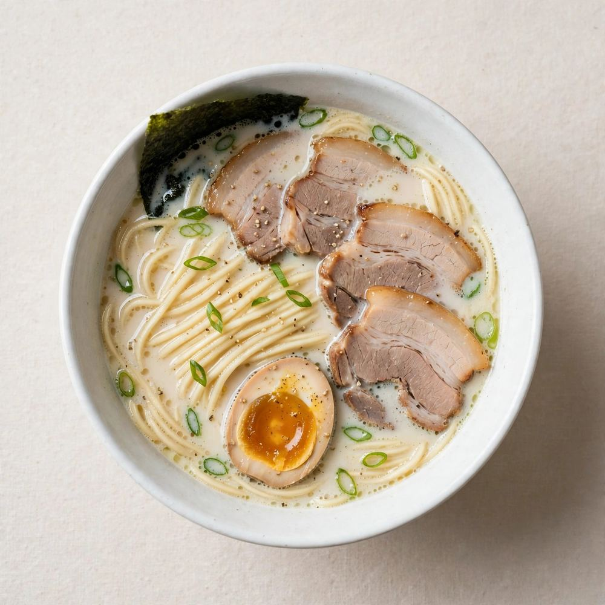

What is tonkotsu ramen?
A rich, creamy pork-bone broth — boiled 12 to 18 hours until it turns milky white — with thin, straight noodles. Born in Hakata (Fukuoka), now found everywhere in Japan.
How to customize like a regular
Many tonkotsu shops hand you an order slip for noodle firmness and toppings:
- 麺の硬さ (noodle firmness): barikata （バリカタ very firm) → katame （硬め firm) → futsuu （普通 normal) → yawarakame （柔らかめ soft). First-timers: go katame.
- 替え玉 kaedama — a second helping of noodles (¥100–150) dropped into your leftover broth. Order by saying "kaedama onegai shimasu".
- Toppings: negi （ネギ green onion), nori （海苔 seaweed), ajitama （味玉 seasoned egg), extra chashu pork.
What to expect
The broth is rich but not heavy-spiced — porky, savory, with a clean finish when done well. Pickled ginger （紅生姜 benishouga) and sesame seeds on the table are for you to add. Garlic crushers are common too.
Allergens and dietary check: is tonkotsu ramen safe for you?
What a typical tonkotsu ramen contains. Recipes vary by shop, so use this to know what to ask, then confirm with the staff. Tap an allergen for its Japanese restaurant card.
| Allergen / diet | Contains? | Why |
|---|---|---|
| Wheat / gluten | Yes | Ramen noodles are wheat; the tare seasoning often has soy sauce. |
| Pork | Yes | Tonkotsu means pork bone. Chashu topping is pork. |
| Soy | Often | Soy sauce in the tare and toppings. |
| Egg | Often | The marinated egg (味玉) topping; some noodles contain egg. |
| Sesame | Often | Sesame seeds or black garlic sesame oil (マー油) on top. |
| Fish / dashi | Sometimes | Some shops blend in fish or seafood stock. |
| Dairy | Rarely | Not traditional, though some shops add butter or milk. |
| Vegetarian? | No | The broth itself is pork; even the noodles cannot be made vegetarian. |
Several allergies? Build one card with our printable Japanese allergy card. Also see halal and vegetarian and vegan cards. This is travel information, not medical advice.
Common questions
Is tonkotsu ramen spicy?
No — the classic version isn't spicy at all. Some shops offer a spicy miso or chili-oil variant, but it will be clearly labeled （辛 kara = spicy).
What's the difference from shoyu/miso ramen?
Tonkotsu refers to the pork-bone broth base. Shoyu (soy sauce), miso, and shio (salt) refer to the seasoning. A "tonkotsu shoyu" is pork broth seasoned with soy sauce — the categories overlap.
What is tonkotsu broth made of?
Pork bones (tonkotsu) boiled hard for many hours until the collagen and fat turn the broth creamy and white. It is a Fukuoka (Hakata) specialty.
Is tonkotsu ramen gluten-free?
No. Ramen noodles are made from wheat, and the seasoning usually contains soy sauce, which also contains wheat.
Is there a pork-free tonkotsu ramen?
No. Tonkotsu means pork bone. If you avoid pork, look for halal or vegan ramen shops, or chicken-broth ramen with no chashu, and still ask about the stock.